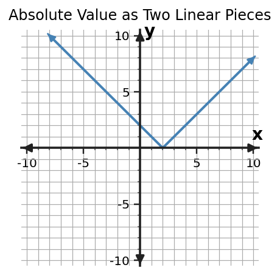

Algebra 1 · Unit 8 · Section 8.3 · Investigation
Distance and Piecewise Thinking
Absolute Value Functions and Piecewise Thinking
Learning Target: Students will analyze and model situations involving absolute value functions.
Directions
- Work with a partner unless your teacher assigns a different grouping.
- Show the evidence you use, not only the final answer.
- When a representation changes, keep the meaning of the quantities attached to your work.
- Revise an answer if later evidence shows that your first claim was incomplete.
Part 1 · Distance from a Target
Let $d(x)$ be the distance of $x$ from 10. Complete the table and write an absolute-value rule.
| $x$ | 6 | 8 | 10 | 12 | 14 |
|---|---|---|---|---|---|
| $d(x)$ |
Part 2 · Two Linear Pieces
Describe the rule for $x\lt 10$ and for $x\ge10$ without using absolute-value notation. Then compare the two slopes.
Part 3 · Graph the Connection

Identify the vertex and explain why it is the meeting point of the two pieces.
Synthesis
When is absolute-value notation more efficient than piecewise notation, and when might piecewise notation communicate more detail?